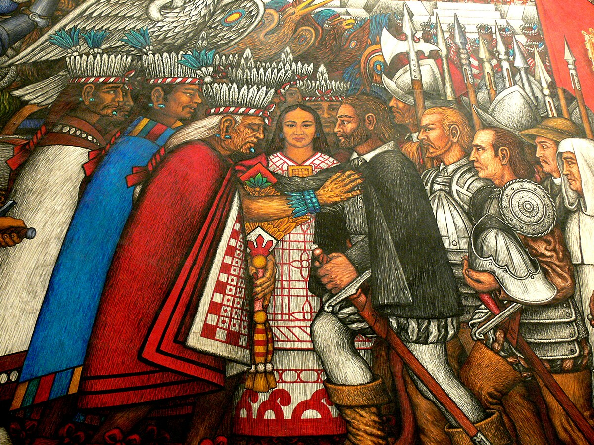

Malintzin, o La Malinche
Introduction

Welcome to this lesson on Malintzin, also known as La Malinche, one of the most important and most debated figures in the history of Mexico. Malintzin was an enslaved Indigenous woman who was given to the Spanish in 1519. She spoke Popoloca, Nahuatl, Chontal Maya, and Yucatec Maya, and she later learned Spanish. She also knew the formal Nahuatl used by nobility and the political protocol used before Mexica rulers. These skills made her the interpreter and mediator between Hernán Cortés and the Indigenous peoples of Mesoamerica. On International Translation Day, September 30, many people remember her as one of the first interpreters in the history of the Americas.
Her birth name is unknown. When the Spanish baptized her, they named her Marina. Nahuatl had no "r" sound, so Nahuatl speakers pronounced the name as Malina and added the honorific suffix -tzin. This gave the name Malintzin, and later Malinche.
Note: This lesson is based on the article ¿Quién fue realmente Malinche? La mujer detrás del mito que cada época quiso construir by Pepe Herrera, published by UNAM, which draws on the research of historian Dr. Guadalupe Gómez Aguado of UNAM's Centro de Enseñanza para Extranjeros (CEPE).
Image: The image is of a mural by Desiderio Hernández Xochitiotzin in which Malintzin mediates discussions between Tlaxcallans and Hernán Cortés. Courtesy of World History Encyclopedia.
Instructions
This activity has three parts:
- Read the selection below, which is adapted from the UNAM article. Use context clues and cognates to understand as much as you can.
- Reflect on the questions about malinchismo in the Discussion section, and if you can, discuss them with a group.
- Go back to the selection and identify all of the verbs in the preterite (simple past) tense. When you're ready, click Reveal to highlight them.
Remember:
- Regular AR verbs in the preterite use these endings: é, aste, ó, amos, asteis, aron.
- Regular ER and IR verbs in the preterite use these endings: í, iste, ió, imos, isteis, ieron.
- Some common verbs are irregular in the preterite. For example, fue is the preterite of both ser and ir, and tuvo is a preterite conjugation of tener.
Discussion: el malinchismo
The way Mexico remembers Malintzin has changed over time. Early codices such as the Lienzo de Tlaxcala show her at the center of political negotiations. After Mexican Independence, however, writers began to portray her as a traitor to her people. In the 20th century, her name gave rise to the word malinchismo, which describes a preference for what is foreign and an undervaluing of what is Mexican. Historians point out that this judgment ignores her circumstances: she was enslaved, she was given to the Spanish, and Mexico did not yet exist as a nation.
Since the 1990s, historians, Chicana writers, and feminist movements have reexamined her story, and she is increasingly recognized as a woman who survived violence and used her knowledge of languages and cultures to navigate a complex political world. On International Translation Day (2025), President Claudia Sheinbaum dedicated her morning press conference to Malintzin and Indigenous women (Día Internacional de la Traducción), and in 2026, Malintzin was added to the Paseo de las Heroínas in Mexico City (Heroínas de la historia de México). This process of restoring her reputation is called her reivindicación.
Discussion
As you learned, the word malinchismo describes a preference for what is foreign and an undervaluing of what is local, and a person who shows this attitude is called malinchista. Reflect on these questions, or discuss them with a group:
- The concept of malinchismo was created centuries after Malintzin died. Why might it be unfair to judge her by ideas of patriotism and nationality that didn't exist in her time?
- Can you think of examples of products, foods, music, or ideas that people prefer because they come from another country, even when a good local version exists? Think about Mexico and about your own community.
- Is there a word or expression in English for this attitude? Why do you think Spanish named it after a specific person?
- Malintzin is now honored on International Translation Day and on the Paseo de las Heroínas. Why do you think the way Mexico sees her has changed? What role do interpreters and translators play when two cultures meet?